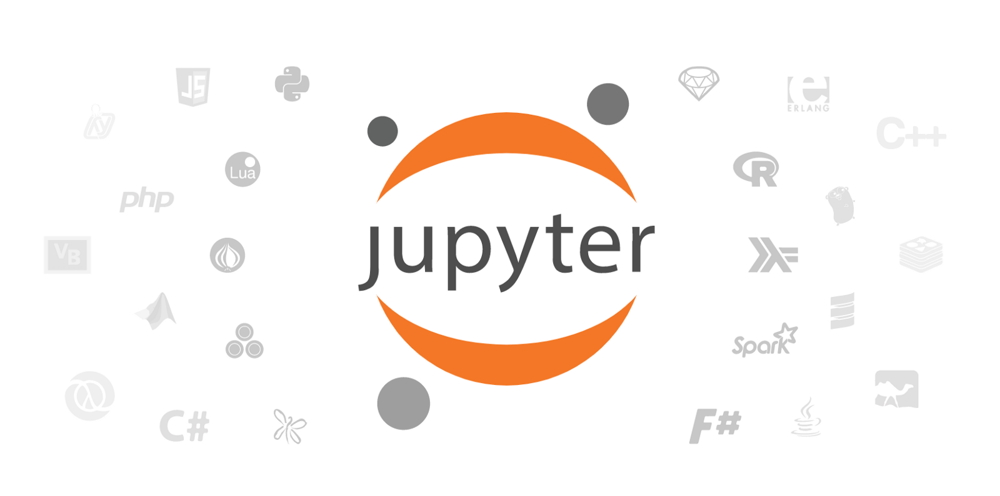

Keyboard shortcuts:
N/СпейсNext Slide
PPrevious Slide
OSlides Overview
ctrl+left clickZoom Element
If you want print version => add '
?print-pdf' at the end of slides URL (remove '#' fragment) and then print.
Like: https://wwwcourses.github.io/...CourseIntro.html?print-pdf
Introduction to Machine Learning. Applications.
Created for

Iva E. Popova, 2022,

Framing the concepts
The concepts mess

Machine Learning - Overview
- Coined in 1959 by Arthur Samuel
- Algorithms that can learn from data and predict new data states
- Supervised and Unsupervised Learning
- Interweaves the advantages in computational statistics, data mining, big data, neural networks, logic programming and rule-based computing, psychology
Machine Learning - Definitions
MLMachineLearningThe original definition from the "father" of ML:
Machine learning is a field of study that gives computers the ability to learn without being explicitly programmed. —Arthur Samuel, 1959
Machine Learning - Definition
The same, expressed in wikipedia:
Machine learning is a field of computer science that uses statistical techniques to give computer systems the ability to "learn" (i.e., progressively improve performance on a specific task) from data, without being explicitly programmedhttps://en.wikipedia.org/wiki/Machine_learning
Big Data - Definition
- Collection of datasets being so large, that its difficult to process with the traditional techniques, like RDBMS
- The rule of Vs:
- Volume - or how much are the data?
- Variety - how diverse are different types of data?
- Velocity - at what speed are the new data generated?
- (Veracity - how accurate is the data?)
KDD- Knowledge Discovery in Databases
- KDD refers to the nontrivial extraction of implicit, previously unknown and potentially useful information from data stored in database

Natural Language Processing (NLP)
- Conceptualized in the 1950s
- ELIZA by by Joseph Weizenbaum
- MARGIE by Schank et all., 1975
- Evolves rapidly with evolution of Machine Learning and Deep Learning
- Google Translate
- Intelligent Chat Bots (check Mitsuku)
- GPT-3 - an autoregressive language model that uses deep learning to produce human-like text.
GPT-3
Machine Learning applications
Machine Learning applications
Search systems
- Ranking algorithms
- Semantic search
- Personalized search
Business and Marketing
- Online Advertising
- Market Prediction
- Accounting And Fintech
- Credit Risk Analysis
- Recruiting Automation
- Intelligent Conversational Interfaces (chatbots)
- Reduced Energy Use And Costs
- Customer-centric, personalized services
Health care
- Diagnosis in Medical Imaging
- Treatment Queries and Suggestions
- Medical Data Collection
- Drug Discovery
- Robotic Surgery
Cyber Security
- Automated Spam Filtering
- Malware detection
- Abnormal site traffic detection
- Security and Crime Prevention
- IoT Systems Security
PR, Social Agencies
- Large-scale analysis of social media data
- Sentiment Analysis of online news/posts
- Social media impact analysis
- Fake-news detection
The Machine Learning process and Tools
The Machine Learning process
It is an iterative process

The Ml process and minimal tools which we'll use in the course:
- Analyze the problem
- Your brain && tools
- Prepare and get insights of the Data
- numpy, pandas, matplotlib
- Select the features
- Your brain && tools
- Choose the model
- Your brain and scikit-learn
- Train
- scikit-learn
- Evaluate
- Your brain and scikit-learn
- Parameter Tuning
- i.e. go back to previous steps and try again, and again and again...
The tools on the data side
- numpy
- Powerful array implementation and functions. Equipped with lots of linear algebra functions, as well
- pandas
- Easy to use, high-performance, data-wrangling package
- matplotlib
- 2D plotting package with some 3D functionality.
The tools on the modeling side
- TensorFlow
- An end-to-end open source machine learning platform developed by Google Brain Team
- Scikit-learn
- a full packaged library with ML algorithms
- NLTK (Natural Language Toolkit) (optional)
- Python implementation of the famous nltk Java package for Natural language processing
Optimizing tools
ML is a computational heavy process. There are lots of tools to speed that process in the Python ecosystem, like:
- Cython
- Python implementation in C language
- Numba
- Python JIT compiler and GPU code execution
- Py CUDA
- GPU code execution
- PP
- Python code parallelizer
- Blaze
- allows working with data bigger than the available RAM
- PySpark
- use Python with Spark
- Pydoop and Hadoopy
We would not use them in this course!
ML Hardware
- CPU (Central Processing Unit) - or just processor, is the electronic circuitry that executes instructions comprising a computer program. The CPU performs basic arithmetic, logic, controlling, and input/output (I/O) operations
- GPU (Graphics Processing Unit) - it was originally created as a multi-threaded structure with many cores
- TPU (Tensor Processing Unit) - is an AI accelerator application-specific integrated circuit (ASIC) developed by Google specifically for neural network machine learning, particularly using Google's own TensorFlow software
Machine Learning (and especially DeepLearning) tasks requires enormous computing power.
{kind=link}
GitHub
- GitHub is a code hosting platform for version control and collaboration.
- It lets you and others work together on projects from anywhere.
- Reference: get started with GitHub
Jupyter Notebooks
- The Jupyter Notebook App is a server-client application that allows editing and running notebook documents via a web browser
- Jupyter Notebooks are documents which contain both computer code (e.g. python) and rich text elements (paragraph, equations, figures, links, etc…).
Google Colaboratory
- Colab, or "Colaboratory", allows you to write and execute Python in your browser, with
- Zero configuration required
- Access to GPUs free of charge
- Easy sharing
- Reference: Welcome To Colaboratory
Practice
Practice
ML Process Demo (Iris Classification) with Scikit-Learn
Live Demo: IrisClasifier.ipynb
- Tasks:
- Get file from GitHub
- Open Jupyter Notebook (
ipynb) file in Google Colab - Run the Notebook